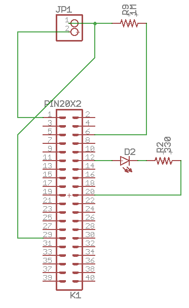
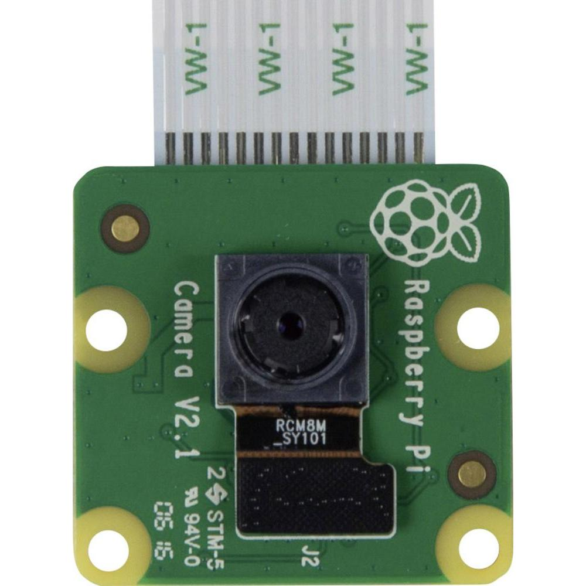
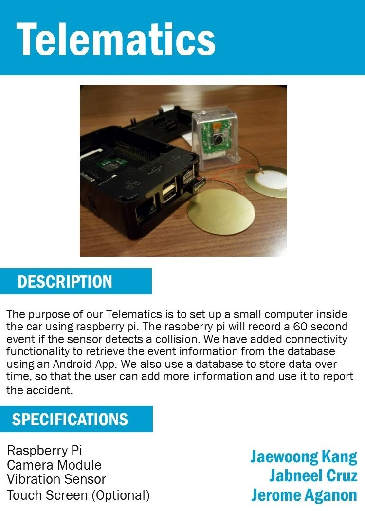

Week3
GANTT Chart

Time Commitment
Bills of Material / Budget
| Equipement | Quantity | Cost with tax |
|---|---|---|
| Raspberry Pi 3 Starter Kit | 1 | $99.99 |
| Pi Camera Module w/ Fish Eye Module | 1 | $38.45 |
| Vibration Sensor | 2 | $19.50 |
| Camera Module Case | 1 | $25.99 |
| 1 Mega Ohm Resistor | 1 | $0.25 |
| 330 Ohm Resistor | 1 | $0.25 |
| Full Sized Breadboard | 1 | $8.81 |
| LED | 1 | $0.25 |
| Total | $193.24 |
Table 1: Required time for building the project.
Time Commitment
By following this build guide, you will spend this amount of time doing this project excluding the time that
you acquire all the materials needed.
| To do | Time Required |
|---|---|
| Raspberry Pi 3 power up | (30 mins) Depends if you already have the software ready in your SD card. |
| PCB Soldering | 1~2 hours for schematics and soldering. Printing the PCB could take 1 hour. Though not implemented in the project, it can be used for lighting up the LED. |
| Project Wiring | 15~30 mins |
| Importing Codes | 1 hour, depends if you have all the required packages for using the camera and accessing email. |
| Running Code | 5-10 mins, this depends how fast the video file get sent to your email. |
| Unit testing for errors | Unknown |
Table 2: Required time for building the project.
Mechanical Assembly
This shows the circuit you have to build for the sensor to detect a vibration coming from tapping it. The LED will blink if the video file was sent to your email.

JP1 --- 2 is for the inner side of the buzzer. Positive.
--- 1 outer part of the buzzer. Negative.
Following the diagram and placing each components in a breadboard would ensure a working vibration sensor program
Connect the particular camera module that I listed above to your Raspberry Pi 3.  Check this out to ensure you have a working camera for raspberry pi!
PCB/Soldering
We tried implementing our working circuit to a PCB but it didn't work.
Unit Testing
You can use these programs for testing your Camera and Vibration Sensor if they are working properly.
Camera
from picamera import PiCamera
from time import sleep
camera = PiCamera()
camera.start_preview()
camera.start_recording('/home/pi/Desktop/Camera/video1.h264')
sleep(5)
camera.stop_recording()
camera.stop_preview()
Vibration Sensor
from time import sleep
import RPi.GPIO as GPIO
GPIO.setmode(GPIO.BCM)
GPIO.setup(5, GPIO.IN, pull_up_down=GPIO.PUD_DOWN )
sleep(1)
while True:
result = GPIO.input(5)
if result == 1:
print("VIbrated")
sleep(1)
Or you can just download the files here camera.py
basicSensor.py
Production Testing
We wanted the video file recorded to be sent to a file server, but as of now , it is being sent to your email.
Main program ---testDrive.py
"
from time import sleep
import RPi.GPIO as GPIO
import time
from picamera import PiCamera
from alertnoise import sendAlert
from cameraCode import initRecvideo, stopVideo, recVideo
import os
#initRecvideo()
# initialize sesnor and leds
GPIO.setmode(GPIO.BCM)
GPIO.setup(5, GPIO.IN, pull_up_down=GPIO.PUD_DOWN )
GPIO.setmode(GPIO.BCM)
GPIO.setwarnings(False)
GPIO.setup(18,GPIO.OUT)
sleep(1)
isTrig = False
def trig():
print "LED on"
GPIO.output(18,GPIO.HIGH)
time.sleep(1)
print "LED off"
GPIO.output(18,GPIO.LOW)
time.sleep(1)
print("Telematics~ running ...");
while True:
GPIO.output(18,GPIO.HIGH)
if isTrig == True:
trig();
#stopVideo()
result = GPIO.input(5)
if result == 1:
print("Vibrated\n********************************\nRecording Video")
isTrig =True
vidName = time.strftime("%d%m%Y")+time.strftime("%I%M%S")
recVideo(vidName)
sleep(1)
hname = vidName+"video.h264"
mname = vidName+"video.mp4"
print("Converting video file h264 to MP4");
commands = "sudo MP4Box -add" + " "+hname + " " +mname
os.system(commands)
print("Sending video file to email");
sendAlert(vidName)
print("File sent");
"
"
#Libraries necessary to send email using python
import smtplib
from email.MIMEMultipart import MIMEMultipart
from email.MIMEText import MIMEText
from email.MIMEBase import MIMEBase
from email import encoders
#Email of the Raspberry Pi
raspaddress = ""
#User's Email address
useraddress = ""
#Structure of the email
msg = MIMEMultipart()
msg['From'] = raspaddress
msg['To'] = useraddress
msg['Subject'] = "Aegis Alert Message"
def alert1(vidName):
body1 = "Movement detected in the room \n"
filename = vidName+"video.mp4"
openAtt = "/home/pi/Desktop/Final Presentation/"+filename
attachment = open(openAtt, "rb")
part = MIMEBase('application', 'octet-stream')
part.set_payload((attachment).read())
encoders.encode_base64(part)
part.add_header('Content-Disposition', "attachment; filename= %s" % filename)
msg.attach(part)
return body1
def alert2():
body2 = "Termperature Change Alert \n"
return body2
def alert3():
body3 = "Smoke Detected \n"
return body3
def sendAlert(vidName):
body = alert1(vidName)
msg.attach(MIMEText(body, 'plain'))
#Parameters for GMail Server
server = smtplib.SMTP('smtp.gmail.com', 587)
# Security function needed to connect to the Gmail server to protect the password.
server.starttls()
#Password of Raspberry Pi's Email
server.login(raspaddress, "P@$$W0RD")
#Sending the email
text = msg.as_string()
server.sendmail(raspaddress, useraddress, text)
server.quit()
"
Records the video for 20 seconds. Can be adjusted by changing the value of sleep ---cameraCode.py
"
from picamera import PiCamera
from time import sleep
camera = PiCamera()
def initRecvideo():
# initialize camera
camera = PiCamera()
camera.start_preview()
def stopVideo():
camera.stop_preview()
def recVideo( sNum ):
dest = '/home/pi/Desktop/Final Presentation/'+str(sNum)+'video.h264'
camera.start_preview()
camera.start_recording(dest)
sleep(20)
camera.stop_recording()
camera.stop_preview()
return;
"
Or you can just download the files here cameraCode.py
alertnoise.py
testDrive.py
Since raspberry pi can only play video files of type h264 you might have some issue with your video conversion to mp4 if you don't have a premade mp4 file. Just create "hello.mp4" in your folder if the problem occurs.
This is how the final product should work
Here I'm linking my colleague's build video SemJerome
Reproducibility Based on Instructions
Final power point presentation: Final Presentation.pptx
Course knowledge utilized from previous courses
Internet programming, HTML
Electronic Devices and Circuits
Scripting
Current progress
Working on creating a PCB of the circuit for vibration sensor. As well as the LED light that indicates if a sensor is detected.
Problems and Opportunities
I have fixed the issue with the vibration sensor not being detected. I changed the GPIO that the vibration sensor is connected to
and it worked. So I concluded that it's the GPIO.
Another issue is the case build for the raspberry pi that secures the camera and the PCB that will be printed.
Financial updates
GPS implementation of the raspberry pi will not be implemented due to budget and time constraint.
Current progress
Still working on combining the code for Camera module and the vibration sensor. Still right on track with the schedule.
Problems and Opportunities
Still hasn't fixed the GPIO on my raspberry pi. I tried using the PCB that we soldered and it lighted up the LED. Will test the temperature and light sensor if it's working.
Financial updates
Might need to spend a little on GPS for raspberry pi cause we will be using the information we get from it with our android application.
Current progress
Will be working on combining the implementation of the camera and the sensor program. Store three 20 seconds video when a vibration is detected
Problems and Opportunities
Demod the project last Tuesday. Camera module working when I connect it through HDMI to monitor but not with remote desktop connection. My vibration sensor circuit wasn't working with my raspberry pi but it worked when I used Jerome's raspberry pi. It might be the GPIO of my raspberry pi that has issue. Will try and resolve it this week.
Financial updates
Need raspberry pi GPIO fixed and spend money on it. So far all materials are on budget.
Build Video
Placard - Telematics
Placard

Current progress
Last tuesday (October 4,2016) I submitted the required Documentation for printing my PCB in prototype lab.
Hopefully to start soldering this week if I get my PCB today.
Problems and Opportunities
Problem- vibration sensors
-Will have to start researching on how to installl
and code sensors into raspberry pi. Can possibly get some help with people in engineering club.
Financial updates
Sensors,raspberry pi and camera module prices can be viewed in budget report. Every materials
used are in budget so far. Will probably need some metal sheets for testing the sensors to demo as a car door which will probably cost 10-30
dollars depending on the size of the material.
*Project Activities - September 30, 2016 (Friday)
Went to Vaughan to buy Raspberry PI Camera Module and
2 sensors.
October 10, 2016
Assembled raspberry pi and installation of its os. Camera module installation and testing on raspberry pi.
GANTT Chart
Telematics
Jabneel Cruz
Jerome Aganon
Jaewoong Kang
Proposal document
Project Proposal

Raspberry Pi LED Green light

Raspberry Pi LED Red light